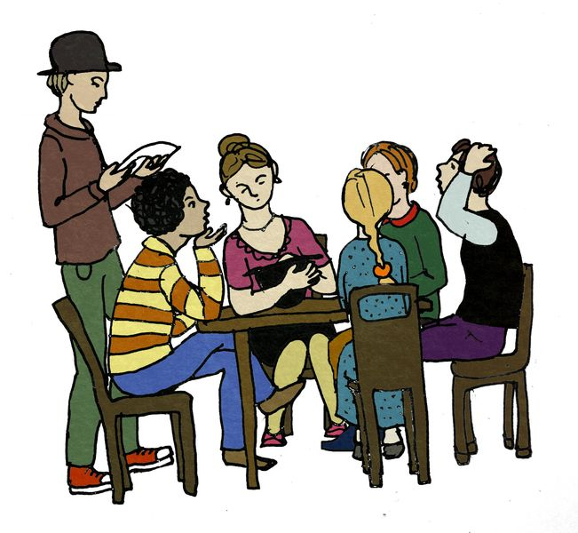

Правила игры
«Шляпа» — это игра для большой хорошей компании, в которую играют все вместе.
Цель игры – за ограниченное время объяснить партнёру или команде как можно больше слов вытянутых из
шляпы.
Подготовка к игре
Для игры в шляпу требуются:Игра

Игроки садятся вокруг стола (обычно — 6-10 человек). В шляпе находится некоторое количество слов, написанных на
бумажках; игроки этих слов не знают. В каждый момент времени играют два человека — объясняющий и отгадывающий,
остальные игроки ждут своей очереди и слушают.
Перед стартом каждого кона засекается время - обычно полминуты.
Объясняющий игрок по команде судьи достаёт из шляпы бумажку, читает написанное на ней слово (про себя) и объясняет
это слово отгадывающему игроку, не используя слова, однокоренные загаданному, а также ненормативную
лексику.
Отгадывающий игрок предлагает версии до тех пор, пока не назовёт загаданное слово. После этого объясняющий
откладывает бумажку с ним в сторону, достаёт следующую бумажку и объясняет следующее слово.
Отгаданные слова в шляпу не возвращаются. По истечении времени судья останавливает игру. Если слово не отгадано,
то объясняющий возвращает бумажку в шляпу, не сообщая игрокам и зрителям загаданного слова. После этого шляпа
переходит к следующему по часовой стрелке игроку.
Игра заканчивается, когда в шляпе не остается бумажек. Победителем становится команда, отгадавшая больше слов.